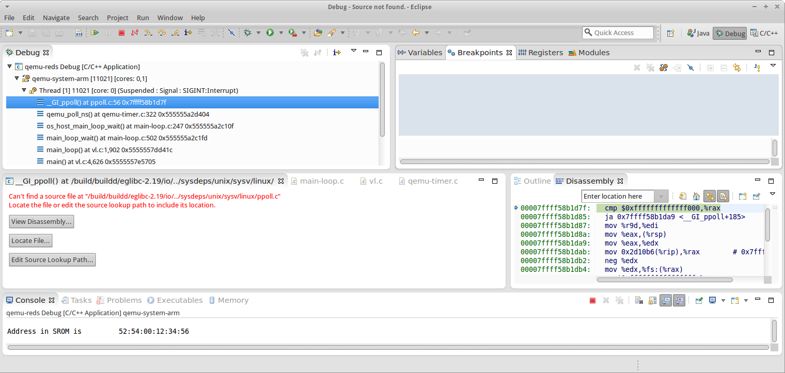
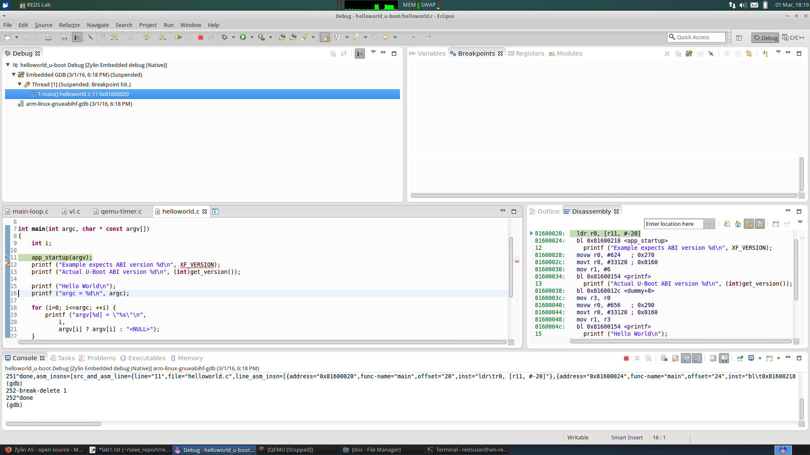
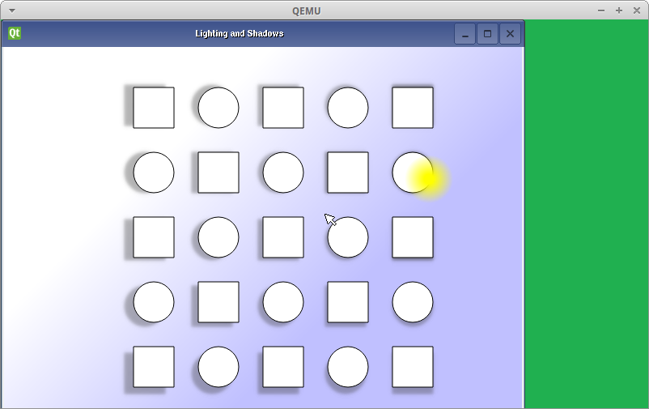

REPTAR Introduction¶
This part has the goal to setup and to make a first contact with the environment used for the SEEE hand-on work (laboratory).
1) Environment setup¶
The project files are provided as a tarball. The tarball was downloaded in the ~/Downloads directory. We can exctract the repository with the following commands:
redsuser@vm-reds-2015s2:~$ tar xf Downloads/seee_student.tar.gz redsuser@vm-reds-2015s2:~$ cd seee_student/
We can now open Ecplise and select /home/redsuser/seee_student as workspace.
Next step is to build the QEMU emulator. The project downloaded is not clean, so we need to clean it first. Then we can build the emulator:
redsuser@vm-reds-2015s2:~/seee_student$ cd qemu-reds
redsuser@vm-reds-2015s2:~/seee_student/qemu-red$ make distclean
redsuser@vm-reds-2015s2:~/seee_student/qemu-red$ cd..
redsuser@vm-reds-2015s2:~/seee_student$ make qemu
2) QEMU startup¶
We can then run the Emulator direcly from Eclipse. For that select Run -> Debug Configuration. Then select the gemu-reds Debug configuration and click Debug. A black Windows apears, this is the emulator windows.
We can pause the Emulator exectution:

We can see that the emulator is stopped int the __GI_pppoll() function. We can then stop the execution.
From the command line we can start the QEMU as well at we arrive in the U-Boot environment:
redsuser@vm-reds-2015s2:~/seee_student$ ../stf
bash: ../stf: No such file or directory
redsuser@vm-reds-2015s2:~/seee_student$ ./stf
WARNING: Image format was not specified for 'filesystem/flash' and probing guessed raw.
Automatically detecting the format is dangerous for raw images, write operations on block 0 will be restricted.
Specify the 'raw' format explicitly to remove the restrictions.
WARNING: Image format was not specified for 'filesystem/sd-card.img' and probing guessed raw.
Automatically detecting the format is dangerous for raw images, write operations on block 0 will be restricted.
Specify the 'raw' format explicitly to remove the restrictions.
reptar-sp6-emul: sp6_emul_init
sp6_emul_init: failed to connect to SP6 server
sp6_emul_init: terminate thread
U-Boot 2011.09-00000-g9af6a15 (Feb 10 2015 - 16:10:59)
U-Boot code: 80008000 -> 80065570 BSS: -> 800F7C68
OMAP35XX-GP ES3.1, CPU-OPP2, L3-165MHz, Max CPU Clock 600 mHz
REPTAR Board + LPDDR/NAND
I2C: ready
monitor len: 000EFC68
ramsize: 10000000
TLB table at: 8fff0000
Top of RAM usable for U-Boot at: 8fff0000
Reserving 959k for U-Boot at: 8ff00000
Reserving 136k for malloc() at: 8fede000
Reserving 32 Bytes for Board Info at: 8feddfe0
Reserving 128 Bytes for Global Data at: 8feddf60
New Stack Pointer is: 8feddf50
RAM Configuration:
Bank #0: 80000000 256 MiB
Bank #1: 90000000 0 Bytes
relocation Offset is: 0fef8000
WARNING: Caches not enabled
monitor flash len: 00066970
Now running in RAM - U-Boot at: 8ff00000
Flash: 16 KiB
Flash pflash NOR detected.
MMC: OMAP SD/MMC: 0
In: serial
Out: serial
Err: serial
fpga_init: CONFIG_FPGA = 0x1
Net: smc911x-0
Warning: smc911x-0 MAC addresses don't match:
Address in SROM is 52:54:00:12:34:56
Address in environment is e4:af:a1:40:01:fe
Reptar #
3) U-Boot test¶
For the U-Boot command prompt we can enter command like printing the environment:
Reptar # printenv
baudrate=115200
boot_linux=mmc rescan; fatload mmc 0 ${loadaddr} uImage; setenv bootargs console=ttyO2,115200n8 noinitrd rw consoleblank=0 root=/dev/mmcblk0p2 rootwait ethaddr=${ethaddr} ip=${ipaddr}:${serverip}:${gatewayip}:${netmask}:::off; bootm ${loadaddr}
bootargs=console=ttyO2,115200n8 noinitrd rw consoleblank=0 root=/dev/mmcblk0p2 rootwait bootm 0x81600000
bootcmd=mmc rescan; fatload mmc 0 0x81600000 uImage; setenv bootargs console=ttyO2,115200n8 noinitrd rw consoleblank=0 root=/dev/mmcblk0p2 rootwait; bootm 0x81600000
bootdelay=-1
ethact=smc911x-0
ethaddr=E4:AF:A1:40:01:FE
fileaddr=81600000
filesize=4AC808
goapp=go 0x81600000
ipaddr=10.0.2.10
loadaddr=0x81600000
netmask=255.255.255.0
serverip=10.0.2.2
stderr=serial
stdin=serial
stdout=serial
test=test string
tftp1=tftp helloworld_u-boot/helloworld.bin
tftp2=tftp gpio_u-boot/gpio_u-boot.bin
tftp3=tftp sp6_buttons_u-boot/sp6_buttons.bin
Environment size: 949/4092 bytes
We can then buid the U-Boot demo executable:
redsuser@vm-reds-2015s2:~/seee_student$ cd helloworld_u-boot/
redsuser@vm-reds-2015s2:~/seee_student/helloworld_u-boot$ make
arm-linux-gnueabihf-gcc -g -O0 -fno-common -ffixed-r8 -msoft-float -D__KERNEL__ -Iinclude -fno-builtin -ffreestanding -nostdinc -isystem /opt/linaro-arm-linux-gnueabihf/bin/../lib/gcc/arm-linux-gnueabihf/4.7.3/include -pipe -DCONFIG_ARM -D__ARM__ -marm -mabi=aapcs-linux -mno-thumb-interwork -Wall -Wstrict-prototypes -c -o stubs.o stubs.c
arm-linux-gnueabihf-ar crv libstubs.a stubs.o
a - stubs.o
arm-linux-gnueabihf-gcc -g -O0 -fno-common -ffixed-r8 -msoft-float -D__KERNEL__ -Iinclude -fno-builtin -ffreestanding -nostdinc -isystem /opt/linaro-arm-linux-gnueabihf/bin/../lib/gcc/arm-linux-gnueabihf/4.7.3/include -pipe -DCONFIG_ARM -D__ARM__ -marm -mabi=aapcs-linux -mno-thumb-interwork -Wall -Wstrict-prototypes -c -o helloworld.o helloworld.c
arm-linux-gnueabihf-gcc -D__ASSEMBLY__ -g -O0 -fno-common -ffixed-r8 -msoft-float -D__KERNEL__ -Iinclude -fno-builtin -ffreestanding -nostdinc -isystem /opt/linaro-arm-linux-gnueabihf/bin/../lib/gcc/arm-linux-gnueabihf/4.7.3/include -pipe -c -o crt0.o crt0.S
arm-linux-gnueabihf-ld -g -Ttext 0x81600000 \
-o helloworld crt0.o helloworld.o stubs.o \
-L/opt/linaro-arm-linux-gnueabihf/bin/../lib/gcc/arm-linux-
We can run this executable frome U-Boot. First we need to make the binary image availbe on the TFTP server. For this we copy it to the tftpboot foldeer:
redsuser@vm-reds-2015s2:~/seee_student$ cp helloworld_u-boot/helloworld.bin ../tftpboot/helloworld_u-boot
redsuser@vm-reds-2015s2:~/seee_student$
Then in U-Boot wen can load this image using TFTP and the predefined variables:
Reptar # run tftp1
smc911x: detected LAN9118 controller
smc911x: phy initialized
smc911x: MAC e4:af:a1:40:01:fe
Using smc911x-0 device
TFTP from server 10.0.2.2; our IP address is 10.0.2.10
Filename 'helloworld_u-boot/helloworld.bin'.
Load address: 0x81600000
Loading: #
done
Bytes transferred = 776 (308 hex)
Reptar # go
And Then we can start the loaded image as we know the loading address of the image for the output of the TFTP command:
Reptar # go 0x81600000
## Starting application at 0x81600000 ...
Example expects ABI version 6
Actual U-Boot ABI version 6
Hello World
argc = 1
argv[0] = "0x81600000"
argv[1] = "<NULL>"
Hit any key to exit ...
## Application terminated, rc = 0x0
Reptar #
We can then debug this application. For this, First start the emulator with the ./stf script. Then in Ecplipse we select the helloworld_u-boot Debug debug confiuration. The debuger start but noting appends. We need to load manualy the image in U-Boot as described above. We have have then the debugger ready in elcpise:

4) Linux test¶
We can deploy the Linux kernel on the virtual SD card of the emulator. For this we have script ready:
redsuser@vm-reds-2015s2:~/seee_student$ ./deploy
Deploying into reptar rootfs ...
Mounting filesystem/sd-card.img...
[sudo] password for redsuser:
SD card partitions mounted in 'boot_tmp' and 'filesystem_tmp' directories
cp: cannot stat 'drivers/sp6.ko': No such file or directory
cp: cannot stat 'drivers/usertest': No such file or directory
cp: cannot stat 'drivers/buttons_test': No such file or directory
Unmounting SD card image...
Synchronizing .img file
Unmounting 'boot_tmp' and 'filesystem_tmp'...
Done !
We can then compile the test appication provided:
redsuser@vm-reds-2015s2:~/seee_student$ cd helloworld_linux/
redsuser@vm-reds-2015s2:~/seee_student/helloworld_linux$ ll
total 32
drwxrwxr-x 2 redsuser redsuser 4096 Feb 21 11:14 ./
drwxrwxr-x 15 redsuser redsuser 4096 Mar 1 18:26 ../
-rw-rw-r-- 1 redsuser redsuser 11388 Feb 21 11:14 .cproject
-rw-rw-r-- 1 redsuser redsuser 378 Feb 21 11:14 helloworld.c
-rw-rw-r-- 1 redsuser redsuser 634 Feb 21 11:14 Makefile
-rw-rw-r-- 1 redsuser redsuser 2446 Feb 21 11:14 .project
redsuser@vm-reds-2015s2:~/seee_student/helloworld_linux$ make
arm-linux-gnueabihf-gcc -marm -g -c helloworld.c
arm-linux-gnueabihf-gcc -o helloworld helloworld.o
And we copy it to the rootfs of the linux image:
redsuser@vm-reds-2015s2:~/seee_student$ ./mount-sd.sh
Mounting filesystem/sd-card.img...
SD card partitions mounted in 'boot_tmp' and 'filesystem_tmp' directories
redsuser@vm-reds-2015s2:~/seee_student$ sudo cp helloworld_linux/helloworld filesystem_tmp/root/
redsuser@vm-reds-2015s2:~/seee_student$ ./umount-sd.sh
Unmounting SD card image...
Synchronizing .img file
Unmounting 'boot_tmp' and 'filesystem_tmp'...
Done !
We can start the QEMU emulator with the virtual SD-CARD using the ./stq script:
redsuser@vm-reds-2015s2:~/seee_student$ ./stq
libGL error: failed to authenticate magic 3
libGL error: failed to load driver: vboxvideo
Running QEMU
WARNING: Image format was not specified for 'filesystem/flash' and probing guessed raw.
Automatically detecting the format is dangerous for raw images, write operations on block 0 will be restricted.
Specify the 'raw' format explicitly to remove the restrictions.
WARNING: Image format was not specified for 'filesystem/sd-card.img' and probing guessed raw.
Automatically detecting the format is dangerous for raw images, write operations on block 0 will be restricted.
Specify the 'raw' format explicitly to remove the restrictions.
reptar-sp6-emul: sp6_emul_init
U-Boot 2011.09-00000-g9af6a15 (Feb 10 2015 - 16:10:59)
U-Boot code: 80008000 -> 80065570 BSS: -> 800F7C68
OMAP35XX-GP ES3.1, CPU-OPP2, L3-165MHz, Max CPU Clock 600 mHz
REPTAR Board + LPDDR/NAND
I2C: ready
monitor len: 000EFC68
ramsize: 10000000
TLB table at: 8fff0000
Top of RAM usable for U-Boot at: 8fff0000
Reserving 959k for U-Boot at: 8ff00000
Reserving 136k for malloc() at: 8fede000
Reserving 32 Bytes for Board Info at: 8feddfe0
Reserving 128 Bytes for Global Data at: 8feddf60
New Stack Pointer is: 8feddf50
RAM Configuration:
Bank #0: 80000000 256 MiB
Bank #1: 90000000 0 Bytes
relocation Offset is: 0fef8000
WARNING: Caches not enabled
monitor flash len: 00066970
Now running in RAM - U-Boot at: 8ff00000
Flash: 16 KiB
Flash pflash NOR detected.
MMC: OMAP SD/MMC: 0
In: serial
Out: serial
Err: serial
fpga_init: CONFIG_FPGA = 0x1
Net: smc911x-0
Warning: smc911x-0 MAC addresses don't match:
Address in SROM is 52:54:00:12:34:56
Address in environment is e4:af:a1:40:01:fe
Reptar #
Form the U-Boot prompt we can start the linux kernel using the boot command:
Reptar # boot
reading uImage
3051480 bytes read
## Booting kernel from Legacy Image at 81600000 ...
Image Name: Linux-3.0.12-reptar
Image Type: ARM Linux Kernel Image (uncompressed)
Data Size: 3051416 Bytes = 2.9 MiB
Load Address: 80008000
Entry Point: 80008000
Verifying Checksum ... OK
Loading Kernel Image ... OK
OK
Using machid 0x2694
Starting kernel ...
Using machid 0x2694
omap2_inth_read: Bad register 0x000020
Linux version 3.0.12-reptar (redsuser@vm-reds64) (gcc version 4.7.3 20130102 (prerelease) (crosstool-NG linaro-1.13.1-4.7-2013.01-20130125 - Linaro GCC 2013.01) ) #1 Thu Feb 18 18:21:09 CET 2016
CPU: ARMv7 Processor [410fc083] revision 3 (ARMv7), cr=10c53c7d
CPU: VIPT nonaliasing data cache, VIPT nonaliasing instruction cache
CPU: running on QEMU emulated environment.
Machine: Reptar Board
Reserving 8388608 bytes SDRAM for VRAM
Memory policy: ECC disabled, Data cache writeback
OMAP3430/3530 ES3.1 (iva sgx neon isp )
SRAM: Mapped pa 0x40200000 to va 0xfe400000 size: 0x10000
Clocking rate (Crystal/Core/MPU): 26.0/13/500 MHz
Reprogramming SDRC clock to 13000000 Hz
dpll3_m2_clk rate change failed: -22
Built 1 zonelists in Zone order, mobility grouping on. Total pages: 62976
Kernel command line: console=ttyO2,115200n8 noinitrd rw consoleblank=0 root=/dev/mmcblk0p2 rootwait
PID hash table entries: 1024 (order: 0, 4096 bytes)
Dentry cache hash table entries: 32768 (order: 5, 131072 bytes)
Inode-cache hash table entries: 16384 (order: 4, 65536 bytes)
Memory: 248MB = 248MB total
Memory: 244860k/244860k available, 17284k reserved, 0K highmem
Virtual kernel memory layout:
vector : 0xffff0000 - 0xffff1000 ( 4 kB)
fixmap : 0xfff00000 - 0xfffe0000 ( 896 kB)
DMA : 0xffc00000 - 0xffe00000 ( 2 MB)
vmalloc : 0xd0800000 - 0xf8000000 ( 632 MB)
lowmem : 0xc0000000 - 0xd0000000 ( 256 MB)
modules : 0xbf000000 - 0xc0000000 ( 16 MB)
.text : 0xc0008000 - 0xc05f15e0 (6054 kB)
.init : 0xc05f2000 - 0xc0620000 ( 184 kB)
.data : 0xc0620000 - 0xc067fc90 ( 384 kB)
.bss : 0xc067fcb4 - 0xc06a4a80 ( 148 kB)
NR_IRQS:410
IRQ: Found an INTC at 0xfa200000 (revision 4.0) with 96 interrupts
Total of 96 interrupts on 1 active controller
OMAP clockevent source: GPTIMER1 at 32768 Hz
sched_clock: 32 bits at 32kHz, resolution 30517ns, wraps every 131071999ms
Console: colour dummy device 80x30
Calibrating delay loop... 537.78 BogoMIPS (lpj=2101248)
pid_max: default: 32768 minimum: 301
Mount-cache hash table entries: 512
CPU: Testing write buffer coherency: ok
devtmpfs: initialized
omap_hwmod: _populate_mpu_rt_base found no _mpu_rt_va for l4_core
omap_hwmod: _populate_mpu_rt_base found no _mpu_rt_va for l4_per
omap_hwmod: _populate_mpu_rt_base found no _mpu_rt_va for l4_wkup
omap_hwmod: gpt12_fck: missing clockdomain for gpt12_fck.
omap_hwmod: i2c1: softreset failed (waited 10000 usec)
omap_hwmod: i2c2: softreset failed (waited 10000 usec)
omap_hwmod: i2c3: softreset failed (waited 10000 usec)
omap_hwmod: am35x_otg_hs: cannot be enabled (3)
print_constraints: dummy:
NET: Registered protocol family 16
GPMC revision 5.0
omap_device: omap_gpio.0: new worst case activate latency 0: 274658
OMAP GPIO hardware version 2.5
OMAP GPIO hardware version 2.5
OMAP GPIO hardware version 2.5
OMAP GPIO hardware version 2.5
OMAP GPIO hardware version 2.5
OMAP GPIO hardware version 2.5
omap_mux_init: Add partition: #1: core, flags: 0
omap_device: omap_uart.0: new worst case activate latency 0: 122070
omap_device: omap_uart.0: new worst case deactivate latency 0: 91552
reptar init SPI bus
reptar_init_wifi
Register WIFI regulator
hw-breakpoint: debug architecture 0x0 unsupported.
omap_mcspi_init called
omap_mcspi_init called
omap_mcspi_init called
omap_mcspi_init called
OMAP DMA hardware revision 4.0
bio: create slab <bio-0> at 0
print_constraints: vwl1271: 1800 mV
SCSI subsystem initialized
omap_device: omap2_mcspi.1: new worst case activate latency 0: 61035
omap_device: omap2_mcspi.1: new worst case deactivate latency 0: 122070
bit per word= 8
usbcore: registered new interface driver usbfs
usbcore: registered new interface driver hub
usbcore: registered new device driver usb
omap_device: omap_i2c.1: new worst case activate latency 0: 61035
omap_i2c omap_i2c.1: bus 1 rev3.12 at 2600 kHz
twl4030: PIH (irq 7) chaining IRQs 368..375
twl4030: power (irq 373) chaining IRQs 376..383
twl4030: gpio (irq 368) chaining IRQs 384..401
print_constraints: VUSB1V5: 1500 mV normal standby
print_constraints: VUSB1V8: 1800 mV normal standby
print_constraints: VUSB3V1: 3100 mV normal standby
twl4030_usb twl4030_usb: Initialized TWL4030 USB module
print_constraints: VIO: 1800 mV normal standby
print_constraints: VMMC1: 1850 <--> 3150 mV at 3000 mV normal standby
print_constraints: VDAC: 1800 mV normal standby
print_constraints: VDVI: 1800 mV normal standby
print_constraints: VSIM: 1800 <--> 3000 mV at 1800 mV normal standby
omap_device: omap_i2c.1: new worst case deactivate latency 0: 61035
omap_i2c omap_i2c.2: bus 2 rev3.12 at 400 kHz
omap_i2c omap_i2c.3: bus 3 rev3.12 at 200 kHz
Advanced Linux Sound Architecture Driver Version 1.0.24.
cfg80211: Calling CRDA to update world regulatory domain
Switching to clocksource 32k_counter
Switched to NOHz mode on CPU #0
musb-hdrc: version 6.0, musb-dma, otg (peripheral+host)
omap_device: musb-omap2430.-1: new worst case activate latency 0: 183105
musb-hdrc musb-hdrc: USB OTG mode controller at fa0ab000 using DMA, IRQ 92
omap_device: omap_i2c.1: new worst case activate latency 0: 91552
omap_device: musb-omap2430.-1: new worst case deactivate latency 0: 30517
NET: Registered protocol family 2
IP route cache hash table entries: 2048 (order: 1, 8192 bytes)
TCP established hash table entries: 8192 (order: 4, 65536 bytes)
TCP bind hash table entries: 8192 (order: 3, 32768 bytes)
TCP: Hash tables configured (established 8192 bind 8192)
TCP reno registered
UDP hash table entries: 256 (order: 0, 4096 bytes)
UDP-Lite hash table entries: 256 (order: 0, 4096 bytes)
NET: Registered protocol family 1
RPC: Registered named UNIX socket transport module.
RPC: Registered udp transport module.
RPC: Registered tcp transport module.
RPC: Registered tcp NFSv4.1 backchannel transport module.
NetWinder Floating Point Emulator V0.97 (double precision)
VFS: Disk quotas dquot_6.5.2
Dquot-cache hash table entries: 1024 (order 0, 4096 bytes)
JFFS2 version 2.2. (NAND) (SUMMARY) © 2001-2006 Red Hat, Inc.
msgmni has been set to 478
io scheduler noop registered
io scheduler deadline registered
io scheduler cfq registered (default)
OMAP DSS rev 2.0
Serial: 8250/16550 driver, 4 ports, IRQ sharing enabled
omap_uart.0: ttyO0 at MMIO 0x4806a000 (irq = 72) is a OMAP UART0
omap_uart.1: ttyO1 at MMIO 0x4806c000 (irq = 73) is a OMAP UART1
omap_uart.2: ttyO2 at MMIO 0x49020000 (irq = 74) is a OMAP UART2
console [ttyO2] enabled
fpgaloader v0.92 ready
brd: module loaded
loop: module loaded
omap2-nand driver initializing
OMAP_NAND ECC_OPT: 1Reading NAND failed -> probably no NAND (reptar/qemu?)
No NAND device found.
smsc911x: Driver version 2008-10-21
smsc911x-mdio: probed
smsc911x smsc911x.0: eth0: attached PHY driver [Generic PHY] (mii_bus:phy_addr=0:01, irq=-1)
smsc911x smsc911x.0: eth0: MAC Address: 52:54:00:12:34:56
ehci_hcd: USB 2.0 'Enhanced' Host Controller (EHCI) Driver
ehci-omap ehci-omap.0: OMAP-EHCI Host Controller
ehci-omap ehci-omap.0: new USB bus registered, assigned bus number 1
ehci-omap ehci-omap.0: irq 77, io mem 0x48064800
ehci-omap ehci-omap.0: USB 2.0 started, EHCI 0.00
usb usb1: New USB device found, idVendor=1d6b, idProduct=0002
usb usb1: New USB device strings: Mfr=3, Product=2, SerialNumber=1
usb usb1: Product: OMAP-EHCI Host Controller
usb usb1: Manufacturer: Linux 3.0.12-reptar ehci_hcd
usb usb1: SerialNumber: ehci-omap.0
hub 1-0:1.0: USB hub found
hub 1-0:1.0: 0 ports detected
usbcore: registered new interface driver cdc_acm
cdc_acm: USB Abstract Control Model driver for USB modems and ISDN adapters
Initializing USB Mass Storage driver...
usbcore: registered new interface driver usb-storage
USB Mass Storage support registered.
usbcore: registered new interface driver usbtest
mousedev: PS/2 mouse device common for all mice
input: gpio-keys as /devices/platform/gpio-keys/input/input0
omap_i2c omap_i2c.3: i2c transfer NACK
edt-ft5x06_i2c 3-0038: i2c_transfer failed, error: -121
edt-ft5x06_i2c 3-0038: Failed to get firmware version, error: -5
edt-ft5x06_i2c: probe of 3-0038 failed with error -5
omap_device: omap_i2c.1: new worst case deactivate latency 0: 732421
twl_rtc twl_rtc: rtc core: registered twl_rtc as rtc0
twl_rtc twl_rtc: Power up reset detected.
twl_rtc twl_rtc: Enabling TWL-RTC.
omap_device: omap_i2c.1: new worst case activate latency 0: 122070
i2c /dev entries driver
Linux video capture interface: v2.00
gspca: v2.13.0 registered
usbcore: registered new interface driver zc3xx
usbcore: registered new interface driver uvcvideo
USB Video Class driver (v1.1.0)
omap_device: omap_wdt.-1: new worst case activate latency 0: 91552
OMAP Watchdog Timer Rev 0x31: initial timeout 60 sec
omap_device: omap_wdt.-1: new worst case deactivate latency 0: 30517
twl4030_wdt twl4030_wdt: Failed to register misc device
twl4030_wdt: probe of twl4030_wdt failed with error -16
usbcore: registered new interface driver usbhid
usbhid: USB HID core driver
mmc0: host does not support reading read-only switch. assuming write-enable.
mmc0: new SD card at address 4567
mmcblk0: mmc0:4567 QEMU! 256 MiB
mmcblk0: p1 p2
OMAP3 EVM SoC init
omap_device: omap_i2c.1: new worst case activate latency 0: 305175
omap_device: omap_i2c.1: new worst case activate latency 0: 457763
asoc: twl4030-hifi <-> omap-mcbsp-dai.1 mapping ok
ALSA device list:
#0: omap3evm
TCP cubic registered
Initializing XFRM netlink socket
NET: Registered protocol family 17
NET: Registered protocol family 15
Registering the dns_resolver key type
VFP support v0.3: implementor 41 architecture 3 part 30 variant c rev 2
omap_device: omap_i2c.1: new worst case activate latency 0: 4760742
omap_device: omap_i2c.1: new worst case deactivate latency 0: 2166748
vp_forceupdate_scale_voltage: vdd_mpu TRANXDONE timeout exceeded while tryingto clear the TRANXDONE status
vp_forceupdate_scale_voltage: vdd_core TRANXDONE timeout exceeded while tryingto clear the TRANXDONE status
sr_init: No PMIC hook to init smartreflex
smartreflex smartreflex.0: omap_sr_probe: SmartReflex driver initialized
smartreflex smartreflex.1: omap_sr_probe: SmartReflex driver initialized
clock: disabling unused clocks to save power
omapdss DPI: Could not find exact pixel clock. Requested 33000 kHz, got 33230 kHz
twl_rtc twl_rtc: setting system clock to 2016-03-01 17:35:49 UTC (1456853749)
omap_vout omap_vout: probed for an unknown device
EXT3-fs: barriers not enabled
kjournald starting. Commit interval 5 seconds
EXT3-fs (mmcblk0p2): warning: mounting fs with errors, running e2fsck is recommended
EXT3-fs (mmcblk0p2): using internal journal
EXT3-fs (mmcblk0p2): mounted filesystem with ordered data mode
VFS: Mounted root (ext3 filesystem) on device 179:2.
devtmpfs: mounted
Freeing init memory: 184K
Starting logging: OK
Starting mdev...
Initializing random number generator... done.
Starting network...
Starting dropbear sshd: OK
Configuring EmbeddedXen Guest devices: /etc/init.d/rcS: /etc/init.d/S60xen_domains.sh: line 38: can't create /sys/bus/xen-backend/phys_dev_ready: nonexistent directory
/dev/loop0.
*** Welcome on REPTAR (HEIG-VD/REDS): use root/root to log in ***
reptar login:
We can login to the linux console using the provieded username & password (“root” & “root”) and start the executable that is already in the filesystem (placed by previous step):
*** Welcome on REPTAR (HEIG-VD/REDS): use root/root to log in ***
reptar login: root
Password:
# ls
Settings fs helloworld rootfs_domU.img
# ./helloworld
Hello world within Linux
argv[0] = ./helloworld
We can start as well a Qt demo and see it in the emulator windows. For this, we need to start the application using the following command:
# /usr/share/qt/examples/effects/lighting/lighting -qws &
#
We can then see the following graphics inside the QEMU windows:

5) Test on real platform¶
On this this step we will load the U-Boot helloworld program as we did in step 3, but this time on the REPTAR hardware. For this we need to connect the REPTAR to the host PC using Ethernet and USB. The USB connection is emulating a Serial port on the host PC. The Ethernet Interface on the PC also needs to be configured to have the IP 192.168.1.1 as the U-Boot on the Hardware is configured to download from this address. We need to open the serial port with an appropriate program:
$ sudo picocom -b 115200 /dev/ttyUSB0
We have now access to the REPATR U-Boot console. We need first to setup the networking paramteres using the predefined command:
Reptar # run setmac setip
Once this is done, we can transfer the application using TFTP:
Reptar # tftp helloworld_u-boot
And we can run it:
Reptar # go 0x81600000